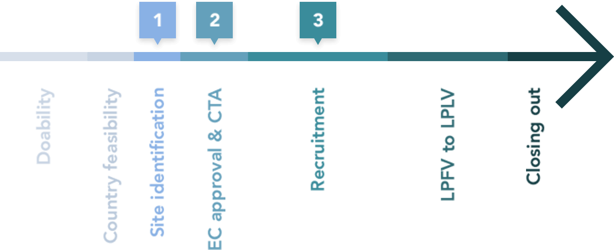

<!DOCTYPE html>
<html lang="en">
<head>
    <meta charset="UTF-8">
    <meta name="robots" content="noindex, nofollow">
    <meta name="viewport" content="user-scalable=no, width=device-width, initial-scale=1, maximum-scale=1">
    <meta name="format-detection" content="telephone=no">
    <meta name="format-detection" content="address=no">

    <title>Services</title>

    <link rel="stylesheet" href="css/services-page.css">
    <link rel="stylesheet" href="css/font-awesome.min.css">

</head>
<body>

    <!-- site -->
    <div class="site">

        <!-- site__header -->
        <header class="site__header">

            <!--site__header-layout-->
            <div class="site__header-layout">

                <!-- logo -->
                <a href="#" class="logo">
                    
                </a>
                <!-- /logo -->

                <!-- site__menu-btn -->
                <button class="site__menu-btn">
                    <span></span>
                </button>
                <!-- /site__menu-btn -->

                <!-- site__menu -->
                <div class="site__menu">

                    <!--site__menu-wrap-->
                    <ul class="site__menu-wrap">
                        <li class="site__menu-item"><a href="#">Home</a></li>
                        <li class="site__menu-item"><a href="#">About Us</a></li>
                        <li class="site__menu-item"><a class="active" href="#">Services</a></li>
                        <li class="site__menu-item"><a href="#">Case Studies</a></li>
                        <li class="site__menu-item"><a href="#">Downloads</a></li>
                    </ul>
                    <!--/site__menu-wrap-->

                </div>
                <!-- /site__menu -->

            </div>
            <!--/site__header-layout-->

        </header>
        <!-- /site__header -->

        <!--site__hero-->
        <div class="site__hero site__hero_inner" style="background-image: url('pic/hero-pic_services.jpg');">

            <!--site__title-->
            <h1 class="site__title">Services</h1>
            <!--/site__title-->

        </div>
        <!--/site__hero-->

        <!-- site__content -->
        <div class="site__content">

            <!--services-->
            <div class="services">

                <!--services__panel-->
                <div class="services__panel">

                    <p>
                        A complete service range tailored to the needs of each clinical trial.
                        Our Recruitment Facilitators help PI’s with 4 service packages.
                    </p>

                    <ul>

                        <!--services__panel-item-->
                        <li class="services__item">

                            <!--services__item-head-->
                            <div class="services__item-head services__item-head_red">

                                <span>Your patients</span>

                                <p>
                                    PI’s own patient database pre-screening & reach out support.
                                </p>

                            </div>
                            <!--/services__item-head-->

                            <!--services__item-example-->
                            <dl class="services__item-example">

                                <dt>Examples:</dt>
                                <dd>
                                    Migraine
                                </dd>

                            </dl>
                            <!--/services__item-example-->

                        </li>
                        <!--/services__panel-item-->

                        <!--services__panel-item-->
                        <li class="services__item">

                            <!--services__item-head-->
                            <div class="services__item-head services__item-head_light-blue">

                                <span>Your DEPARTMENT</span>

                                <p>
                                    PI’s department pooled patient database pre-screening & reach out support.
                                </p>

                            </div>
                            <!--/services__item-head-->

                            <!--services__item-example-->
                            <dl class="services__item-example">

                                <dt>Examples:</dt>
                                <dd>
                                    Type I diabetes, IVF
                                </dd>

                            </dl>
                            <!--/services__item-example-->

                        </li>
                        <!--/services__panel-item-->

                        <!--services__panel-item-->
                        <li class="services__item">

                            <!--services__item-head-->
                            <div class="services__item-head services__item-head_blue">

                                <span>YOUR HOSPITAL</span>

                                <p>
                                    Collaboration with a Pivot Entity (PE) within the PI’s site.
                                </p>

                            </div>
                            <!--/services__item-head-->

                            <!--services__item-example-->
                            <dl class="services__item-example">

                                <dt>Examples:</dt>
                                <dd>
                                    HeFH (Ped), Clostridium Difficile (Ped), Venous Trombosis (Ped)
                                </dd>

                            </dl>
                            <!--/services__item-example-->

                        </li>
                        <!--/services__panel-item-->

                        <!--services__panel-item-->
                        <li class="services__item">

                            <!--services__item-head-->
                            <div class="services__item-head services__item-head_green">

                                <span>THE WHOLE COUNTRY</span>

                                <p>
                                    Network activation to reach out to patients in other sites via Referring Physicians
                                    (RP’s).
                                </p>

                            </div>
                            <!--/services__item-head-->

                            <!--services__item-example-->
                            <dl class="services__item-example">

                                <dt>Examples:</dt>
                                <dd>
                                    2nd line MPM, TKI resistant EGFR NSCLC, Biliary Atresia (Ped)
                                </dd>

                            </dl>
                            <!--/services__item-example-->

                        </li>
                        <!--/services__panel-item-->

                    </ul>

                </div>
                <!--/services__panel-->

                <!--services__whatwedo-->
                <div class="services__whatwedo">

                    <!--site__centered-->
                    <div class="site__centered">

                        <h2>What we do for you</h2>

                        <!--services__whatwedo-list-->
                        <ul class="services__whatwedo-list">

                            <li class="blue">
                                <strong>From the Site Selection Visit</strong>, we support you in designing the best
                                recruitment tactic and in finding a budget with the Sponsor
                            </li>

                            <li class="dark-blue">
                                <strong>We support you</strong> in submitting the recruitment tactic to the Ethics
                                Committee and in setting up the related contract with the Sponsor
                            </li>
                            <li class="green">
                                <strong>We dedicate</strong> a Recruitment Facilitator from our team to run the
                                recruitment plan with you
                            </li>

                        </ul>
                        <!--/services__whatwedo-list-->

                        <!--services__whatwedo-pic-->
                        <div class="services__whatwedo-pic">

                            

                        </div>
                        <!--/services__whatwedo-pic-->

                        <!--services__whatwedo-btns-->
                        <div class="services__whatwedo-btns">

                            <!--btn-->
                            <a class="btn btn_3" data-fill="#295aa7" data-shadow="#000000" href="#">
                                <canvas></canvas>
                                <canvas></canvas>
                                <span>Discover our case study</span>
                            </a>
                            <!--/btn-->

                        </div>
                        <!--/services__whatwedo-btns-->

                    </div>
                    <!--/site__centered-->

                </div>
                <!--/services__whatwedo-->

                <!--services__faq-->
                <div class="services__faq">

                    <!--site__centered-->
                    <div class="site__centered">

                        <h3>FAQ about our services</h3>

                        <!--services__faq-list-->
                        <ul class="services__faq-list">

                            <!--services__faq-item-->
                            <li class="services__faq-item">

                                <!--services__faq-item-head-->
                                <div class="services__faq-item-head">
                                    What is a referring physician and why every physician should become one?
                                    <span></span>
                                </div>
                                <!--/services__faq-item-head-->

                                <!--services__faq-list-sub-->
                                <div class="services__faq-list-sub">

                                    <p>
                                        The medical definition of referral is the process of directing or re-directing
                                        a patient to an appropriate specialist for definitive treatment. In the case
                                        of clinical trials, referrals are necessary because protocols are open in very
                                        few hospital sites throughout the country, sometimes even in only one site for
                                        Belgium. As unmet medical needs are still present in the healthcare system,
                                        becoming a referring physician enables you to inform your patients about new
                                        treatments several years before they officially get on the market.
                                    </p>

                                    <p>
                                        By informing them, you give them the opportunity to contribute to the progress
                                        of medicine and to potentially benefit from alternative treatments. At the end
                                        of the day, it is a practicable way for each physician to speed up the
                                        development of new treatments without engaging in the arduous role of principal
                                        investigator.
                                    </p>

                                    <!--btn-main-->
                                    <a class="btn-main" href="#">READ THE CASE STUDY</a>
                                    <!--/btn-main-->

                                </div>
                                <!--/services__faq-list-sub-->

                            </li>
                            <!--/services__faq-item-->

                            <!--services__faq-item-->
                            <li class="services__faq-item">

                                <!--services__faq-item-head-->
                                <div class="services__faq-item-head">
                                    Being a referring physician does not mean …
                                    <span></span>
                                </div>
                                <!--/services__faq-item-head-->

                                <!--services__faq-list-sub-->
                                <div class="services__faq-list-sub">

                                    <p>
                                        The medical definition of referral is the process of directing or re-directing
                                        a patient to an appropriate specialist for definitive treatment. In the case
                                        of clinical trials, referrals are necessary because protocols are open in very
                                        few hospital sites throughout the country, sometimes even in only one site for
                                        Belgium. As unmet medical needs are still present in the healthcare system,
                                        becoming a referring physician enables you to inform your patients about new
                                        treatments several years before they officially get on the market.
                                    </p>

                                    <p>
                                        By informing them, you give them the opportunity to contribute to the progress
                                        of medicine and to potentially benefit from alternative treatments. At the end
                                        of the day, it is a practicable way for each physician to speed up the
                                        development of new treatments without engaging in the arduous role of principal
                                        investigator.
                                    </p>

                                    <!--btn-main-->
                                    <a class="btn-main" href="#">READ THE CASE STUDY</a>
                                    <!--/btn-main-->

                                </div>
                                <!--/services__faq-list-sub-->

                            </li>
                            <!--/services__faq-item-->

                            <!--services__faq-item-->
                            <li class="services__faq-item">

                                <!--services__faq-item-head-->
                                <div class="services__faq-item-head">
                                    What is the role of ClinicoBru?
                                    <span></span>
                                </div>
                                <!--/services__faq-item-head-->

                                <!--services__faq-list-sub-->
                                <div class="services__faq-list-sub">

                                    <p>
                                        The medical definition of referral is the process of directing or re-directing
                                        a patient to an appropriate specialist for definitive treatment. In the case
                                        of clinical trials, referrals are necessary because protocols are open in very
                                        few hospital sites throughout the country, sometimes even in only one site for
                                        Belgium. As unmet medical needs are still present in the healthcare system,
                                        becoming a referring physician enables you to inform your patients about new
                                        treatments several years before they officially get on the market.
                                    </p>

                                    <p>
                                        By informing them, you give them the opportunity to contribute to the progress
                                        of medicine and to potentially benefit from alternative treatments. At the end
                                        of the day, it is a practicable way for each physician to speed up the
                                        development of new treatments without engaging in the arduous role of principal
                                        investigator.
                                    </p>

                                    <!--btn-main-->
                                    <a class="btn-main" href="#">READ THE CASE STUDY</a>
                                    <!--/btn-main-->

                                </div>
                                <!--/services__faq-list-sub-->

                            </li>
                            <!--/services__faq-item-->

                        </ul>
                        <!--/services__faq-list-->

                    </div>
                    <!--/site__centered-->

                </div>
                <!--/services__faq-->

            </div>
            <!--/services-->

        </div>
        <!-- /site__content -->

        <!-- site__footer -->
        <footer class="site__footer">

            <!--site__footer-layout-->
            <div class="site__footer-layout">

                <!--site__footer-logo-->
                <div class="site__footer-logo">
                    
                </div>
                <!--/site__footer-logo-->

                <!--site__footer-inner-->
                <div class="site__footer-inner">

                    <!--site__footer-info-->
                    <div class="site__footer-info">

                        <!--site__footer-title-->
                        <h3 class="site__footer-title">INFO</h3>
                        <!--/site__footer-title-->

                        ClinicoBru vzw-asbl
                        <address>Brussels Life Science Incubator
                            Clos Chapelle-aux-Champs, 30 box 1.30.30
                            B-1200 Brussels</address>

                    </div>
                    <!--/site__footer-info-->

                    <!--site__footer-contact-->
                    <div class="site__footer-contact">

                        <!--site__footer-title-->
                        <h3 class="site__footer-title">Contact</h3>
                        <!--/site__footer-title-->

                        <!--site__footer-contact-list-->
                        <ul class="site__footer-contact-list">
                            <li>
                                <a href="tel:+32028806290">
                                    <i class="fa fa-phone" aria-hidden="true"></i>
                                    +32 (0)2 880 62 90
                                </a>
                            </li>
                            <li>
                                <a href="mailto:info@clinicobru.be">
                                    <i class="fa fa-envelope" aria-hidden="true"></i>
                                    info@clinicobru.be
                                </a>
                            </li>
                        </ul>
                        <!--/site__footer-contact-list-->

                    </div>
                    <!--/site__footer-contact-->

                </div>
                <!--/site__footer-inner-->

            </div>
            <!--/site__footer-layout-->

            <!--site__footer-bottom-->
            <div class="site__footer-bottom">

                <!--site__footer-layout-->
                <div class="site__footer-layout">

                    <!--site__footer-copyrights-->
                    <div class="site__footer-copyrights">© ClinicoBru 2016</div>
                    <!--/site__footer-copyrights-->

                    <!--site__footer-crafted-->
                    <span class="site__footer-crafted">Website carefully crafted by <a href="#">Ergonomic</a></span>
                    <!--/site__footer-crafted-->

                </div>
                <!--/site__footer-layout-->

            </div>
            <!--/site__footer-bottom-->

        </footer>
        <!-- /site__footer -->

    </div>
    <!-- /site -->

    <script src="js/vendors/jquery-2.2.1.min.js"></script>
    <script src="js/services.min.js"></script>
</body>
</html>
